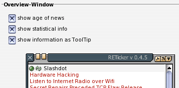

IV. Einzelübersicht über die Optionen

IV.VI. Overview-Window (Options)
Overview-Window
Dieser Bereich erlaubt, zusätzliche Informationen zur Anzeige im Übersichts-Fenster zu bringen. Zum einen können die Zeitstempel (Abholzeit und, wenn vorhanden, der dc:date Zeitstempel der Erstellung der Nachricht) angezeigt werden ('show age iof news'). Ist der Schalter 'show statistical info' aktiviert, wird angezeigt, wie of die nachricht bereits im Ticker gezeigt wurde.Ist der folgenden Schalter 'show information as ToolTip' deaktiviert, werden diese Informationen vor den eigentlichen Nachrichten-Titel geschrieben. Sollen diese Informationen hingegen als ToolTip angezeigt werden, wird in diesem ToolTip, wenn vorhanden, zusätzlich eine weitergehende Erläuterung der Nachricht angezeigt.